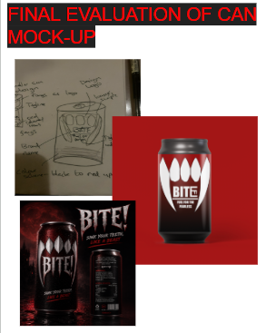
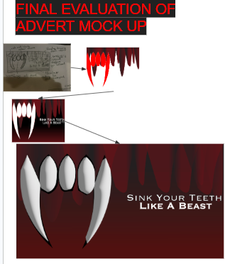
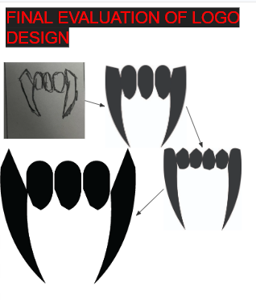
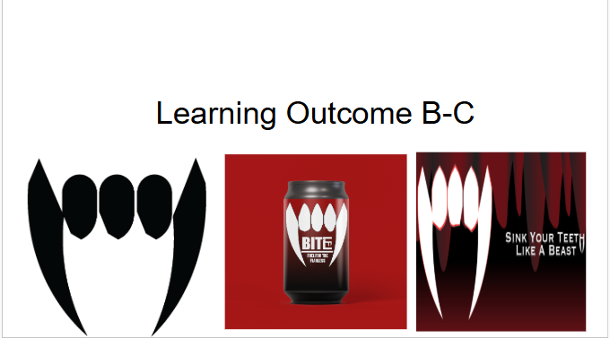

Unit 6 - Creating Digital Graphics



This unit explores how online services and internet technologies work.
Evidence

Assignment Evidence
Slideshow of the process of making a logo, can and advert design.
Download CourseworkReflection
During the process of creating my can drink design, I learned how important visual communication and branding are in graphic design. I developed skills in choosing colour schemes, typography, and layout to make the product stand out and appeal to the target audience. I also learned how to balance creativity with practicality by making sure the design was eye catching while still being clear and easy to understand. I also learned the importance of feedback and refinement. By reviewing my work and making improvements, I understood how small changes such as adjusting the placement of text, simplifying graphics, or improving readability can make a big difference in the final outcome. This helped improve my attention to detail and problem solving skills. In the future, these skills could benefit me by preparing me for careers in graphic design, marketing, advertising, or digital media. The project also improved my creativity, communication, and ability to work through a design process, which are useful skills in many industries, especially within technology and creative fields.